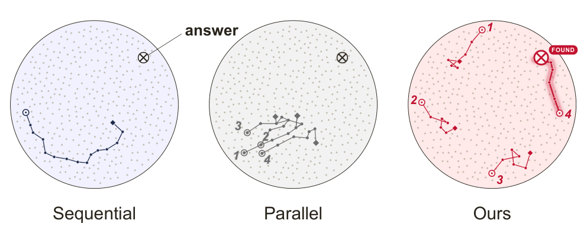
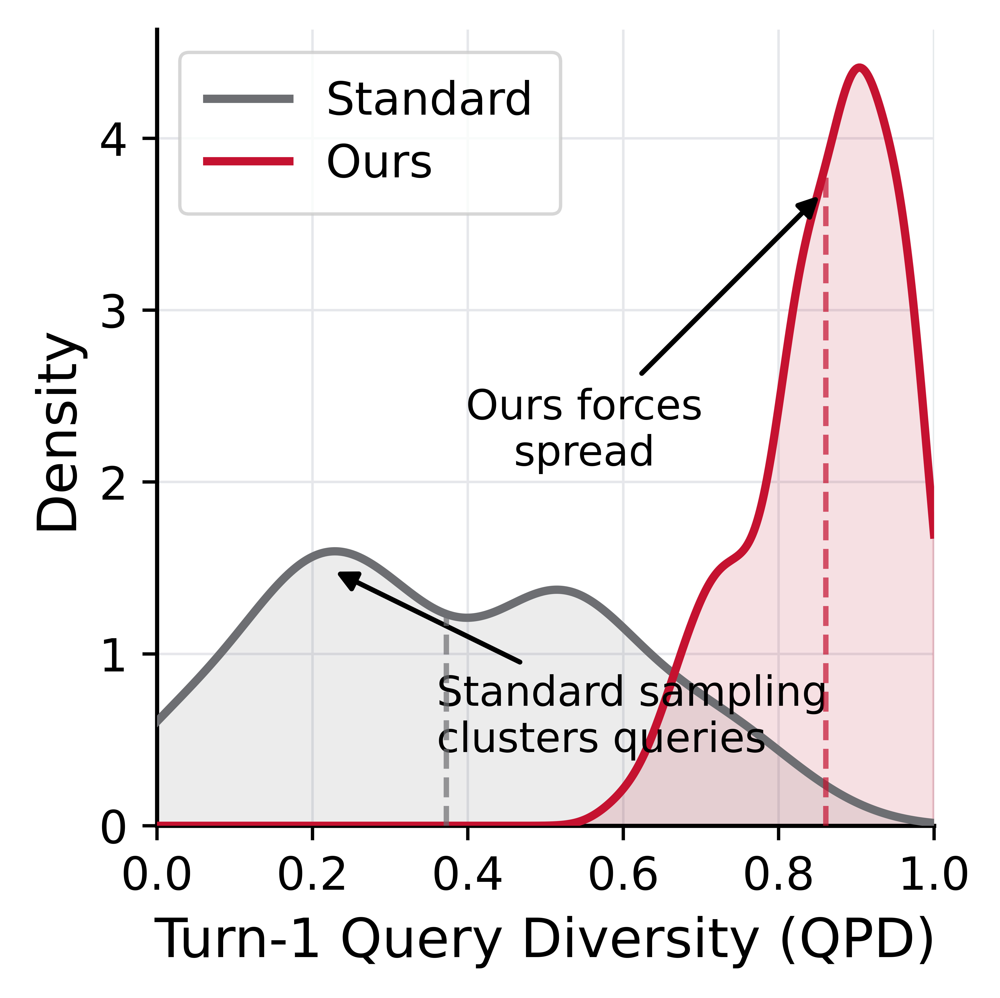
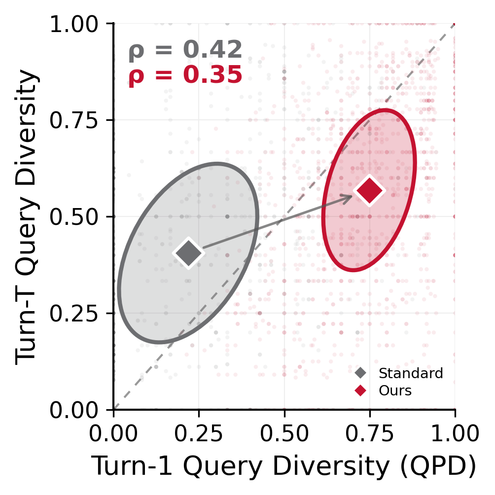
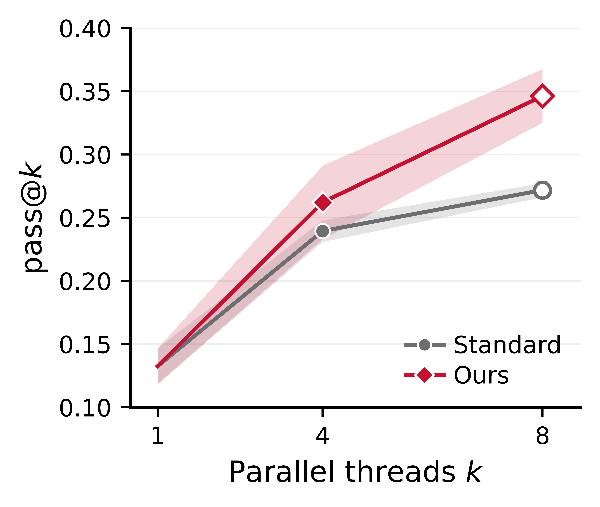
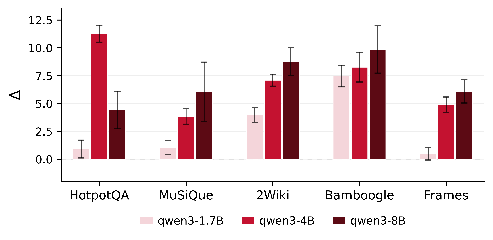

Running multiple search agents in parallel should, in principle, increase coverage of the answer space. In practice, threads initialized independently collapse onto near-identical first queries — a phenomenon we call anchor collapse — retrieve overlapping evidence, and fail together. Scaling up the thread count amplifies this problem rather than solving it.
We introduce DivInit, a training-free method that intervenes at turn 1 only: a single LLM call generates a pool of n candidate queries, and greedy max-min Jaccard selection picks k maximally diverse seeds. Each thread starts from its own seed; everything from turn 2 onward is unchanged. DivInit requires fewer total LLM calls than standard parallel sampling, plugs into any ReAct-style agent, and needs no reward model, fine-tuning, or additional search budget.
Across five open-weight models and eight benchmarks spanning multi-hop QA and open-web retrieval, DivInit consistently improves pass@4 by 5–7 points on multi-hop tasks. Gains scale with model capacity: near-zero at 1.7B, most pronounced at 8B and 12B — pointing to a capability floor below which models cannot productively act on varied initializations.
Parallel sampling at temperature T > 0 is supposed to introduce stochasticity. But when you measure the pairwise diversity of first-turn search queries across threads — using token-level Jaccard distance, which we call QPD (Query Pairwise Distance) — standard threads cluster tightly at QPD ≈ 0.2 regardless of temperature. The distribution barely shifts as T increases; the problem is structural, not thermal.

Low turn-1 diversity isn't just an aesthetic problem. The first query determines which documents get retrieved; overlapping retrieval means overlapping evidence; overlapping evidence means correlated trajectories and correlated failures. We quantify this with turn-1 imprint: the rank correlation between a thread's turn-1 QPD and its full-trajectory diversity.

One intervention, at turn 1 only. No training, no reward model, no additional search budget.
Generate a pool of n candidate queries in a single shared LLM call. This is the only additional overhead DivInit introduces relative to a single-thread baseline.
Select k diverse seeds via greedy max-min Jaccard (MMR, λ = 0). Iteratively pick the candidate with the largest minimum token-level Jaccard distance to the already-selected set. Selection is milliseconds of arithmetic — no model calls, no embeddings required.
Launch one thread per seed. Each thread issues its seed as its turn-1 search query. From turn 2 onward, all threads are standard ReAct — no further DivInit involvement.
With k = 4 threads and T = 8 turns, DivInit makes 29 LLM calls versus 32 for standard parallel sampling — a 3-call reduction at matched thread count. The selection step (greedy Jaccard on token sets) adds no model calls and completes in under one millisecond.
We compared greedy Jaccard selection against dense sentence-embedding diversity (all-MiniLM-L6-v2) across pool sizes from 8 to 64 candidates. Jaccard matches or outperforms dense selection at every pool size while requiring no embedding model. For search queries — short, keyword-rich, often sharing domain vocabulary — token overlap is a well-calibrated proxy for query similarity.
We evaluate pass@4 (any of 4 threads correct = pass) across five open-weight models and eight benchmarks: five multi-hop QA tasks (HotpotQA, MuSiQue, 2WikiMultihopQA, Bamboogle, FRAMES) and three open-web tasks (GAIA, HLE, WebWalker). All experiments use k = 4 threads, pool size n = 16, and 8 turns per thread.


DivInit improves pass@4 by +5–7 points on multi-hop QA at matched compute, with consistent gains across all five models. Open-web gains are smaller but present. The capacity scaling pattern — gains concentrating at larger models — suggests a capability floor: small models may lack the reasoning depth to productively diverge from distinct starting points.
| Model | Multi-hop QA | Open-Web | ||||||||
|---|---|---|---|---|---|---|---|---|---|---|
| HpQA | MuSi | 2Wiki | Bambo | FRAMES | Avg | GAIA | HLE | WebWalker | Avg | |
| Qwen3-1.7B | 42.9 → 43.8 | 14.5 → 15.6 | 37.6 → 41.5 | 16.8 → 24.3 | 13.1 → 13.6 | 25.0 → 27.8 | — | — | — | — |
| Qwen3-4B | 41.9 → 53.2 | 15.9 → 19.7 | 41.9 → 49.0 | 32.5 → 40.8 | 15.5 → 20.4 | 29.5 → 36.6 | 22.7 → 27.8 | 9.7 → 14.3 | 38.7 → 44.9 | 23.7 → 29.0 |
| Qwen3-8B | 50.4 → 57.0 | 23.9 → 29.7 | 46.3 → 55.1 | 47.7 → 57.6 | 24.8 → 30.8 | 38.6 → 46.0 | 26.0 → 30.2 | 10.0 → 14.1 | 41.6 → 46.8 | 25.2 → 28.2 |
| Gemma3-4B | 40.0 → 49.2 | 17.2 → 16.1 | 42.8 → 52.2 | 27.7 → 37.9 | 12.3 → 14.7 | 28.0 → 34.0 | — | — | — | — |
| Gemma3-12B | 54.9 → 59.1 | 31.6 → 36.1 | 52.0 → 53.9 | 55.7 → 64.3 | 31.0 → 37.5 | 45.0 → 50.2 | 34.0 → 35.0 | 12.7 → 14.8 | 38.0 → 45.2 | 28.2 → 31.6 |
Green = DivInit improves; red = DivInit regresses. Dashes indicate models not evaluated on open-web benchmarks (hardware constraints). Qwen3-1.7B and Gemma3-4B do not run GAIA / HLE / WebWalker.
If you find this work useful, please cite:
@article{murali2026divinit,
title = {Beyond Parallel Sampling: Diverse Query Initialization
for Agentic Search},
author = {Murali, Sidhaarth and Coelho, Jo{\~a}o and Ning, Jingjie
and Magalh{\~a}es, Jo{\~a}o and Martins, Bruno
and Xiong, Chenyan},
year = {2026},
url = {https://arxiv.org/abs/2606.17209},
note = {Preprint}
}